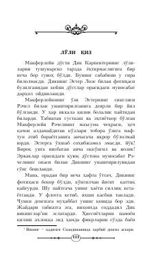

LQSirli lo'li qiz obrazi atrofida to'qilgan psixologik detektiv hikoya.
Bu Agatha Kristining detektiv hikoyasi bo'lib, Makferleyn va uning do'sti Dik Karpenter o'rtasidagi suhbat orqali rivojlanadi. Dik bolaligidan beri tushlarida ko'radigan lo'li qiz obrazi va uning hayotidagi sirli ogohlantirishlar haqida so'zlab beradi. Hikoya psixologik tarang atmosfera va sirli voqealar bilan o'quvchini qiziqtirib boradi.